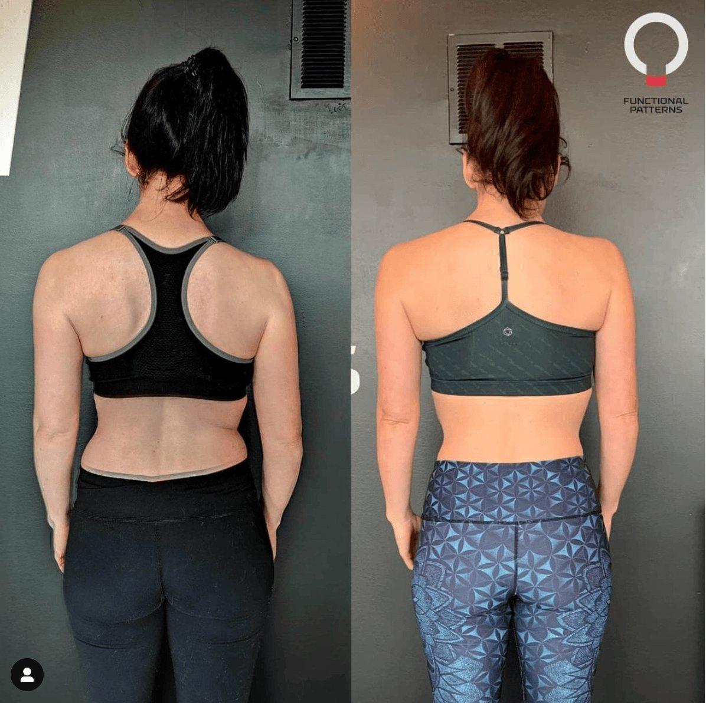

Thoracic Outlet Syndrome (TOS) occurs when nerves or blood vessels are compressed between the collarbone and the first rib. This can lead to a variety of symptoms, including pain, numbness, and weakness in the arms and shoulders.
Poor posture, repetitive movements, or even structural abnormalities like an extra cervical rib can cause TOS. Thoracic outlet decompression through surgery is one way to relieve these symptoms. The good news is that surgery is not always necessary, and that there are other avenues to explore.
The Surgical Option: Cervical Rib Removal
In some cases, people with TOS may have an extra rib, known as a cervical rib. This contributes to the compression of the nerves or blood vessels. The removal of this rib can reduce the pressure and offer significant relief.
Cervical rib removal is one of the most direct surgical solutions for TOS. The desired outcome is to create more space for the nerves or blood vessels to pass through the thoracic outlet. The goal is to have this movement occur without compression.
However, this type of thoracic outlet decompression surgery involves its own risks. This includes thoracic outlet surgery scar and a potentially long thoracic outlet surgery recovery time.
Patients should consider that recovery from surgery typically involves rest, pain medications, and physical rehabilitation. The healing process may also result in scar tissue, which could impact long-term recovery. While this surgery is effective in many cases, it's not always the best first-line treatment.
Avoiding Surgery in Functional TOS Cases
Not all cases of TOS require surgical intervention. Many people can achieve thoracic outlet decompression by changing their posture and movement patterns.
This is especially true for functional TOS. The symptoms are caused by poor body mechanics rather than an anatomical abnormality. By correcting posture and improving movement habits, you can relieve the compression without needing to undergo surgical treatment.
Physical therapy focused on posture correction can reduce pressure on the brachial plexus. This can alleviate the pain and numbness caused by compressed nerves.
Strengthening the muscles that support proper posture, such as the scalene muscles, can also help maintain decompression in the thoracic outlet area. In this way, TOS symptoms can be effectively managed without the risks associated with surgery.

Achieving Thoracic Outlet Decompression through Movement
Posture plays a critical role in TOS because misalignment can increase pressure on the nerves and blood vessels. A forward head position or rounded shoulders often exacerbate the compression. By focusing on movements that improve posture, you can create space in the thoracic outlet and reduce nerve compression.
Techniques that address core strength, spinal alignment, and shoulder positioning are key to achieving thoracic outlet syndrome decompression without invasive procedures.
For many people, physical therapy is a long-term solution to treating TOS. Instead of undergoing vascular surgery or relying on medications, decompression exercises can be a less risky and more effective way to relieve symptoms. Additionally, the recovery process is typically faster and comes without the potential complications of surgery. These include scar tissue or the need for follow-up procedures.

Why Surgery Isn't Always Necessary
Surgical options like outlet decompression surgery or cervical rib removal can be lifesaving for severe cases. However, many TOS sufferers can avoid surgery by adopting functional movement strategies.
Surgery closes the incision with stitches, but it can take weeks or months to fully recover, depending on the complexity of the procedure.
Additionally, thoracic outlet surgery scar formation can cause ongoing discomfort or limit range of motion. However, in functional cases of TOS, the underlying cause is often mechanical, meaning surgery can be avoided entirely with the right rehabilitation approach.
Correcting the body's mechanics through functional movement is not only a more natural solution but also addresses the root causes of TOS. Improving posture and creating space in the thoracic outlet can prevent the recurrence of symptoms like shoulder pain radiating down the arm or tingling in the shoulder blade.